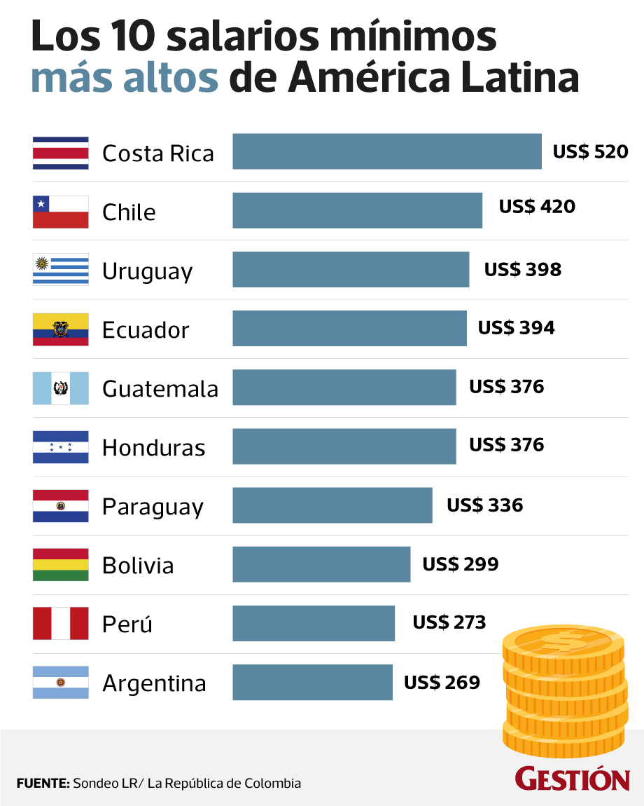

Is Costa Rica an expensive country for tourists?
Short answer is: yes. But don't leave! There is still hope to have a decent trip to Costa Rica with a limited budget.
But first, why is Costa Rica so expensive?
Well, there are a couple of reasons. Most of them related to taxes and payments to the goverment.
Main reason is the high minimum payment. Costa Rica has the highest minimum salary in latin america. In this moment is around $ 535. So, imagine you are an hotel owner. You will need at least $535 per month for every employe you have. But, this is not all! Because you will have to pay the insurance and the mandatory public medical service for any employe and that is a big amount of money too.

Second reason: taxes. The charge of taxes is very high in Costa Rica. Even half of the oil price is due to taxes! Taxes for every service or product and at the end of the year you have to pay a rent tax for all the money you own in that specific year.
Third and final reason: Overprice: Many "ticos" believe all tourists are rich so, when they are offering a service or a product to you, maybe they could take some advantage and up the price just for your condition of foreigner.
Taxi service usually is as expensive as double in the touristic regions. When you land on the airport, the first thing you will see are "airport taxies" with absolutely ridiculous fares. As a tourist, you can't avoid to pay taxes in every service or product, but you can avoid overprice. The best way to receive real prices for any service is doing the same as ticos do. This is, act as a costarican. If you are in a touristic place like Arenal Volcano or Manuel Antonio beach, and you want to save some money in food for example, you can buy your food in the supermarket and cook by yourself. In any case, in the restaurant you will receive the same food at double or triple price. I am not joking. Last year we paid 27.000 CRC ($55) for 4 plates in a hotel restaurant in La Fortuna. With less than 10.000 we could have buy the same ingredients and cooked our own food.
Do you want to get to some place? Use the public transportation service if possible! I asure you it will be a new whole experience use the Costarican public transport service ;). Or rent a car but search the best option, COMPARE. That's the word which will help you in your saving money journey.
In sumary, yes, Costa Rica is an expensive country. So prepare your wallet. But, we will try to give you some tips in this website, tips which could help you with your budget. And, we will start now with a few little tips!
Aditional little tips
Dollars: Locals will accept dollars in touristic zones. In San José Downtown or any other downtown, you have to use colones (CRC). 1$ = 600 CRC, but this changes of course. Also, you can use your credit card, but i suggest always to have with you some cash (colones).
Tips: It depends totally of you. If you pay the service, you don't have to give a tip as a some kind of misterious required rule.
Water: Don't waste money in water bottles! (and don't polute the world!) Drink water from the tube, is safe. I'll do a post about this in the future, but for the moment, believe me.
Airbnb: It's absolutely expensive! Is the easiest way of course, but if you can find an hotel where pass the night, do it! Private houses or apartments in airbnb are just too expensive.
So, if you ask us our ranking of expensiveness in Costa Rica, it would be:
1. Accommodation
2. Transportation
3. Food
Sadly, there is not to much to do about accomodation. Most of the options are expensive. For the moment my advise is to pay for some "Hostel" a place to stay at night and share with others. If you prefer solitude, there is always the option to find a local who could give you a room for a very little price.